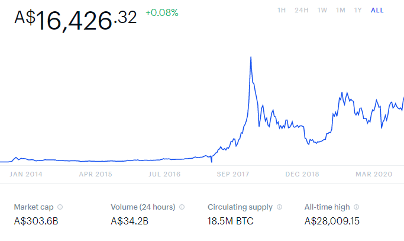

My Background

Interest in Information Technology
My interest in IT started in a round about way, I started studying an Associate Degree in Mechanical Engineering at RMIT in 2012 after graduating high school. After two years of study I managed to confirm that I immensely dislike Mechanical Engineering. So, I decided to double down and start another Associate degree in Civil Engineering. After another two years of study I graduated with two Associate Degrees and had confirmed that Engineering may not be the sort of thing I enjoy.
After graduating I lived abroad in Asia, Europe and most recently, North America, where I was working in the Canadian Rockies at a backcountry lodge, taking people on hiking tours in summer and cross-country skiing in winter. When the Covid-19 pandemic hit, I decided to return to Australia when the company I was working for was forced to close its doors and could no longer sponsor my visa.
When I was living in Hanoi, working as an English teacher was where my interest in IT was first sparked. The community of expats in my area were a mix of different professionals, and a small group of them worked in IT; Programmers, Web developers, and other consultants who all had the ability to work remotely and travel to different parts of the world. Seeing the freedom their roles allowed them was very intriguing and I began to consider the possibility of a future in IT.
When I had to relocate back to Melbourne this year, a friend suggested that I apply for an entry level job at their Telcom company, Aussie Broadband. Despite having very little knowledge and no experience in the industry I got a Customer service Sales position. Shortly after starting I was transitioned to working remotely in response to the growing COVID-19 restrictions. Working from home reminded me of the expats in Hanoi, some of who have continued living abroad throughout the pandemic and have managed to maintain stability in their jobs.
Even though my experience of working remotely is from a desk in my flat and not Hanoi, it has me considering a career in IT and how I could expand my role within Aussie Broadband, or even shape a future career around the lifestyle I enjoy, that is challenging, interesting and secure.
I started to take free Programming courses through EDX and Code Academy, as I had always found programming languages interesting and engaging. When the Federal government announced the COVID-19 Undergraduate Certificate courses, I saw that RMIT was offering an Undergraduate certificate in Information Technology. Having been a student at RMIT before, it seemed a natural fit to jump back into higher education to start exploring my options for a career in IT. I am hoping this certificate will give me a broad base of IT knowledge, and better idea of what my options could be moving forward.
Ideal Job
Web link:
https://au.indeed.com/viewjob?cmp=New-Market-Leader&t=Full+Stack+Developer+Net+Python&jk=e80aedd8f3e52a82&sjdu=8EWtruxy728tzxKcUmN0cbCMTN6TBlbqwSiHGWKXUH1qIUFctEsMxW-LDDbvfupW7pYqY_NpKuWR3wbtrpDDWNYCg6Ze9YLKcjSUekXKlCI&tk=1efatj67285gs800&adid=345485660&pub=4a1b367933fd867b19b072952f68dceb&vjs=3


(Full Stack Developer | .NET | Python - Melbourne VIC 3030 - Indeed.com, 2020)
Job Description
This job is for a Remote Full stack developer. Full stack developers are programmers that are proficient in both front and back end coding and know a variety of different coding languages. Working as a full stack developer, I feel the work is a little more varied and interesting then focusing on front end or back end individually. I feel that working across multiple projects, and being involved in different aspects of each one, would be challenging and interesting. This position is also one which can be fulfilled remotely. The freedom to work wherever I choose within Australia and make my own hours is very appealing, as I have always performed best when I can work to a set deadline at times that are most suitable to me.
The requirements for this position are quite broad and could be suitable for a wide range of people; from recent graduates, to others with several years of industry experience. It asks that candidates ideally have two years of relevant experience and an IT degree, but also indicates that “graduates who can demonstrate excellent skills” would be considered as well. The advertisement also states both the industry experience and a bachelor’s degree are preferred, but not essential.
Along with education and experience requirements, this job also requires candidates to have the following skill sets, and be competent in a variety of different of programing languages:
- Analytical problem-solving
- Written and verbal communication
- Ability to work autonomously
- Angular 7/8/9
- React
- HTML, CSS
- PostgreSQL
- C#, .NET Core 2/3
- Entity Framework Core
- LINQ
Skill Sets
Language Competencies
Career Plan
Project Idea
Overview and Motivation
My project idea is for a series of banking tools and systems, with the purpose of simplifying the use of cryptocurrency in everyday life, to help encourage more widespread adoption of this technology. Ideally, this would be developed in conjunction with an existing financial institution, and integrated into their existing services, however it would potentially work as a stand-alone platform if required.
The first Cryptocurrency, Bitcoin, was first developed in 2008 . (A brief history on Bitcoin & Cryptocurrencies | Ledger, 2020) Since this introduction over 10 years ago, the industry has grown to include more than 1500 cryptocurrencies on the market today. (List of All Current Cryptocurrencies, 2020) The marker has grown vastly, and Bitcoin particularly has gone through multiple stages of exponential growth in value, reaching and all time high of $28009.15 AUD in December 2017. The first Cryptocurrency, Bitcoin, was first developed in 2008 . (A brief history on Bitcoin & Cryptocurrencies | Ledger, 2020) Since this introduction over 10 years ago, the industry has grown to include more than 1500 cryptocurrencies on the market today. (List of All Current Cryptocurrencies, 2020) The marker has grown vastly, and Bitcoin particularly has gone through multiple stages of exponential growth in value, reaching and all time high of $28009.15 AUD in December 2017. (Bitcoin Price Chart (BTC) | Coinbase, 2020)
Description and Limitations
Description and Limitations
Tools Technologies and Skill Required
Tools Technologies and Skill Required
Outcome
Outcome stuff
Refrences and Acknoledgments
Refrences
Coinbase.com. 2020. Bitcoin Price Chart (BTC) | Coinbase. [online] Available at: [Accessed 15 August 2020].
Kaspersky.com. 2020. Uncharted Territory: Why Consumers Are Still Wary About Adopting Cryptocurrency. [online] Available at:
2020. POMP Podcast 270. [online] Available at:
Locke, T., 2020. Mark Cuban: This Is What It Would Take For Me To Change My Mind About Bitcoin. [online] CNBC. Available at:
Au.indeed.com. 2020. Full Stack Developer | .NET | Python - Melbourne VIC 3030 - Indeed.Com. [online] Available at:
Mallory. 2020. Information Technology Jobs Descriptions. [online] Available at:
coinmarketcap.com. 2020. List Of All Current Cryptocurrencys. [online] Available at: